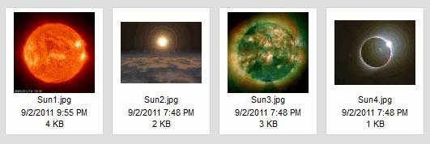
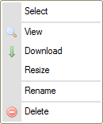
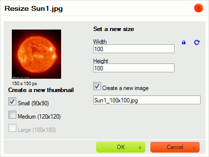

Panel plik贸w pokazuje wszystkie pliki dost臋pne w wybranym folderze.
Panel plik贸w mo偶e prezentowa膰 pliki za pomoc膮 jednego z dw贸ch r贸偶nych format贸w wy橹wietlania zale偶nych od ustawie艅 CKFindera (patrz "Ustawienia "). Poni偶ej znajduje si臋 por贸wnanie widok贸w Miniaturek oraz Listy dla tego samego folderu.
Je橹li CKFinder zostanie skonfigurowany by korzysta膰 z widoku Miniaturek (Thumbnails), pliki zostan膮 wy橹wietlone w postaci miniaturek (niewielkich podgl膮d贸w lub ikon), z dodatkowymi informacjami takimi jak nazwa pliku, jego rozmiar lub data modyfikacji b膮d藕 bez nich (w zale偶no橹ci od ustawie艅).

Je橹li CKFinder zostanie skonfigurowany by korzysta膰 z widoku Listy (List), pliki zostan膮 wy橹wietlone w postaci listy, z dodatkowymi informacjami takimi jak nazwa pliku, jego rozmiar lub data modyfikacji b膮d藕 bez nich (w zale偶no橹ci od ustawie艅).

W celu aktywowania pliku i uczynienia go "plikiem bie偶膮cym" w CKFinderze nale偶y klikn膮膰 nazw臋 pliku lub jego miniaturk臋. By 艂atwiej by艂o wybra膰 plik, kiedy kursor myszy znajdzie si臋 nad plikiem, jego t艂o zostanie tymczasowo pod橹wietlone. Po aktywowaniu pliku zostanie on na sta艂e pod橹wietlony za pomoc膮 innego koloru t艂a.
Poni偶szy rysunek prezentuje r贸偶ne stany pliku ogl膮danego w folderze, od odznaczonego poprzez pod橹wietlony przez najechanie kursorem myszy po aktywowany (wybrany).
 |
 |
 |
W celu odznaczenia pliku nale偶y klikn膮膰 inny plik (tym samym aktywuj膮c go) lub klikn膮膰 w dowolne puste miejsce wewn膮trz panelu plik贸w CKFindera.
W celu skopiowania pliku do innego folderu nale偶y wybra膰 plik i przeci膮gn膮膰 go nad folder docelowy w panelu folder贸w. Po upuszczeniu pliku nad nazw膮 folderu docelowego nale偶y wybra膰 opcj臋 Skopiuj plik tutaj (Copy File Here) z menu kontekstowego.

Plik zostanie zduplikowany, a jego kopie umieszczona b臋dzie w folderze docelowym. Zawarto橹膰 folderu 藕r贸d艂owego nie zmieni si臋.

Uwaga: Je橹li plik o tej samej nazwie istnieje ju偶 w folderze docelowym, zostaniesz poproszony o wyb贸r pomi臋dzy nadpisaniem istniej膮cego pliku a automatyczn膮 zmian膮 kopiowanego pliku (to drugie jest opcj膮 domy橹ln膮).

W celu przeniesienia pliku do innego folderu nale偶y wybra膰 plik i przeci膮gn膮膰 go nad folder docelowy w panelu folder贸w. Po upuszczeniu pliku nad nazw膮 folderu docelowego nale偶y wybra膰 opcj臋 Przenie橹 plik tutaj (Move File Here) z menu kontekstowego.
Plik zostanie usuni臋ty z folderu 藕r贸d艂owego i dodany do zawarto橹ci folderu docelowego.

Operacje zaawansowane mo偶na wykonywa膰 na pliku za pomoc膮 jego menu kontekstowego. W zale偶no橹ci od okoliczno橹ci nast臋puj膮ce opcje mog膮 by膰 dost臋pne:

Uwaga: Niekt贸re opcje menu kontekstowego mog膮 by膰 wy艂膮czone (i tym samym wyszarzone) w zale偶no橹ci od konfiguracji CKFindera ustawionej przez administratora systemu.
W celu wybrania pliku za pomoc膮 menu kontekstowego nale偶y u偶y膰 opcji Wybierz (Select). Alternatywnie mo偶na r贸wnie偶 dwukrotnie klikn膮膰 plik za pomoc膮 myszy.
W zale偶no橹ci od 橹rodowiska, w kt贸rym wykorzystywany jest CKFinder, operacja wyboru mo偶e, na przyk艂ad, przes艂a膰 adres URL pliku do innej aplikacji lub wstawi膰 obrazek bezpo橹rednio do artyku艂u tworzonego w systemie CMS.
W celu zobaczenia pliku w przegl膮darce internetowej nale偶y wybra膰 opcj臋 Zobacz (View) z menu kontekstowego. Nie dla wszystkich typ贸w plik贸w mo偶na uzyska膰 podgl膮d w przegl膮darce, jednak opcja ta przydaje si臋 w przypadku obrazk贸w, tekstu oraz plik贸w PDF. W pozosta艂ych przypadkach przegl膮darka poprosi Ci臋 o wyb贸r aplikacji do otwarcia pliku.
W przypadku podgl膮du obrazk贸w CKFinder wy橹wietli obrazek w oknie wyskakuj膮cym opartym na efekcie lightboxa.
W celu pobrania pliku nale偶y wybra膰 opcj臋 Pobierz (Download) z menu kontekstowego. Przegl膮darka zapyta o lokalizacj臋 do zapisu pobranego pliku na Twoim komputerze. W zale偶no橹ci od ustawie艅 przegl膮darki oraz systemu operacyjnego plik b臋dzie mo偶na otworzy膰 natychmiast po pobraniu za pomoc膮 odpowiedniej aplikacji Twojego komputera.
W celu zmiany rozmiaru obrazka lub jego miniaturki nale偶y wybra膰 opcj臋 Zmie艅 rozmiar (Resize) z menu kontekstowego. Po wprowadzeniu nowych rozmiar贸w lub wybraniu wielko橹ci miniaturki nale偶y zamkn膮膰 okno dialogowe w celu zapisania zmian.

Je橹li obrazek jest zbyt du偶y, mo偶na zmieni膰 jego wymiary, wprowadzaj膮c nowe warto橹ci
do p贸l Szeroko橹膰 (Width) oraz Wysoko橹膰 (Height). Domy橹lnie
proporcje obrazka s膮 zablokowane, co sygnalizowane jest ikon膮  (Zablokuj proporcje). Oznacza to, 偶e je橹li zmienisz jedn膮 z warto橹ci d艂ugo橹ci
(szeroko橹膰 lub wysoko橹膰), druga zostanie automatycznie dostosowana.
(Zablokuj proporcje). Oznacza to, 偶e je橹li zmienisz jedn膮 z warto橹ci d艂ugo橹ci
(szeroko橹膰 lub wysoko橹膰), druga zostanie automatycznie dostosowana.
Je橹li chcesz m贸c swobodnie zmienia膰 oba wymiary, kliknij ikon臋 Zablokuj proporcje
w celu jej odblokowania. Ikona ta zmieni si臋 teraz w  ,
a zmiana jednego z wymiar贸w nie poci膮gnie za sob膮 automatycznej modyfikacji drugiego.
By ponownie zablokowa膰 proporcje obrazka, kliknij ikon臋 jeszcze raz.
,
a zmiana jednego z wymiar贸w nie poci膮gnie za sob膮 automatycznej modyfikacji drugiego.
By ponownie zablokowa膰 proporcje obrazka, kliknij ikon臋 jeszcze raz.
Dop贸ki nie zapiszesz zmian, w ka偶dej chwili mo偶esz z 艂atwo橹ci膮 powr贸ci膰 do oryginalnego rozmiaru pliku, naciskaj膮c
ikon臋  (Przywr贸膰 rozmiar). Spowoduje ona przywr贸cenie rozmiaru obrazka do
pierwotnej wielko橹ci. Oryginalna szeroko橹膰 oraz wysoko橹膰 pojawi膮 si臋 w odpowiednich
polach okna dialogowego.
(Przywr贸膰 rozmiar). Spowoduje ona przywr贸cenie rozmiaru obrazka do
pierwotnej wielko橹ci. Oryginalna szeroko橹膰 oraz wysoko橹膰 pojawi膮 si臋 w odpowiednich
polach okna dialogowego.
Po zmianie wielko橹ci obrazka mo偶esz zdecydowa膰 si臋 na zapisanie go pod t膮 sam膮 nazw膮, nadpisuj膮c istniej膮cy plik. Pami臋taj, 偶e operacji tej nie mo偶na odwr贸ci膰 i po zapisaniu pliku o zmodyfikowanych wymiarach nie b臋dziesz w stanie przywr贸ci膰 jego oryginalnej wielko橹ci. W celu nadpisania oryginalnego pliku pozostaw pole wyboru Utw贸rz nowy obrazek (Create a new image) odznaczone.

Mo偶esz r贸wnie偶 zapisa膰 zmodyfikowany obrazek w nowym pliku i pozostawi膰 orygina艂 bez zmian. Je橹li
zaznaczysz pole wyboru Utw贸rz nowy obrazek (Create a new image), b臋dziesz m贸g艂
nada膰 zmodyfikowanemu obrazkowi now膮 nazw臋. Domy橹lnie CKFinder sugeruje, by zapisa膰 obrazek pod nazw膮
zbudowan膮 z dotychczasowej nazwy pliku z dodatkiem nowych wymiar贸w (na przyk艂ad: Sun1_100x100.jpg
przy oryginalnym pliku o nazwie Sun1.jpg i zmianie wymiar贸w do 100 pikseli szeroko橹ci
i 100 pikseli wysoko橹ci).

Kiedy zmiany s膮 gotowe, kliknij przycisk OK w celu zamkni臋cia okna dialogowego. Je橹li operacja zmiany rozmiaru obrazka powiedzie si臋, wy橹wietlony zostanie odpowiedni komunikat.

Je橹li zmodyfikowany obrazek zosta艂 zapisany jako nowy plik, w folderze zobaczysz obok siebie obie wersje.

Uwaga: Wymiary oryginalnego obrazka mog膮 ogranicza膰 opcje dost臋pne przy zmianie rozmiaru. Zmodyfikowane wymiary obrazka nie mog膮 by膰 wi臋ksze od oryginalnych.
Opcj臋 zmiany rozmiaru obrazka mo偶na r贸wnie偶 wykorzysta膰 do wygenerowania pomniejszonych kopii obrazk贸w (miniaturek), kt贸rych mo偶esz potem u偶y膰 w artyku艂ach publikowanych na swojej stronie internetowej lub w postach na blogu. Dzi臋ki opcji zmiany wielko橹ci miniatury administrator strony mo偶e ustawi膰 zdefiniowane wielko橹ci miniaturek, kt贸re b臋d膮 potem wykorzystywane przez u偶ytkownik贸w CKFindera. Oszcz臋dzi Ci to konieczno橹ci r臋cznego wpisywania zmodyfikowanych warto橹ci szeroko橹ci i wysoko橹ci dla ka偶dego obrazka, a tak偶e pozwoli zachowa膰 sp贸jne wymiary miniaturek na ca艂ej stronie.
W celu u偶ycia jednej ze zdefiniowanych wielko橹ci miniaturki wybierz opcj臋 Zmie艅 rozmiar (Resize)
z menu kontekstowego obrazka. W cz臋橹ci Utw贸rz now膮 miniaturk臋 (Create a new thumbnail)
okna dialogowego zaznacz pola wyboru reprezentuj膮ce po偶膮dan膮 wielko橹膰 (lub wielko橹ci) miniaturki.
Je橹li operacja zmiany rozmiaru miniaturki powiedzie si臋, wy橹wietlony zostanie odpowiedni komunikat.
Obrazki o zmodyfikowanej wielko橹ci zostan膮 utworzone w tym samym folderze, a nowe pliki otrzymaj膮
nazwy odpowiadaj膮ce wybranej opcji miniaturki (z przyrostkami _large,
_medium oraz _small dodanymi do oryginalnej nazwy pliku).

Uwaga: Je橹li obrazek jest mniejszy od kt贸rej橹 z dost臋pnych opcji miniaturek (jak w przyk艂adzie powy偶ej), niedost臋pne opcje zostan膮 wyszarzone.
W celu zmiany nazwy pliku nale偶y wybra膰 opcj臋 Zmie艅 nazw臋 (Rename) z jego menu kontekstowego lub u偶y膰 klawisza F2. Wpisz now膮 nazw臋 pliku w oknie dialogowym, kt贸re zostanie wy橹wietlone, nadpisuj膮c obecn膮 nazw臋. Po nadaniu plikowi nowej nazwy i zamkni臋ciu okna nazwa pliku zmieni si臋.

Nie wszystkie znaki mog膮 by膰 wykorzystywane w nazwach plik贸w oraz folder贸w ze wzgl臋du
na ograniczenia system贸w, w kt贸rych dzia艂a CKFinder. W橹r贸d znak贸w, kt贸rych nie mo偶na
u偶y膰 w nazwach plik贸w b膮d藕 folder贸w s膮: \ / :
* ? " <
> oraz |.
Ostrze偶enie: Po zmianie nazwy pliku odno橹niki prowadz膮ce do niego i dodane na innych stronach przestan膮 dzia艂a膰. Z tego powodu nale偶y przy korzystaniu z tej opcji zachowa膰 ostro偶no橹膰.
W celu usuni臋cia pliku nale偶y wybra膰 opcj臋 Usu艅 (Delete) z menu kontekstowego pliku lub u偶y膰 klawisza Del. Niezb臋dne b臋dzie potwierdzenie ch臋ci usuni臋cia pliku w oknie dialogowym, kt贸re zostanie wy橹wietlone. Po potwierdzeniu intencji i zamkni臋ciu okna plik zostanie usuni臋ty.
Ostrze偶enie: Operacja ta jest nieodwracalna. Po usuni臋ciu pliku nie b臋dziesz m贸g艂 go odzyska膰.

Ostrze偶enie: Po usuni臋ciu pliku odno橹niki prowadz膮ce do niego i dodane na innych stronach przestan膮 dzia艂a膰. Z tego powodu nale偶y przy korzystaniu z tej opcji zachowa膰 ostro偶no橹膰.